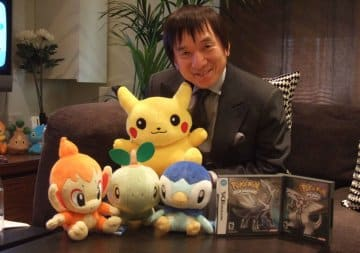
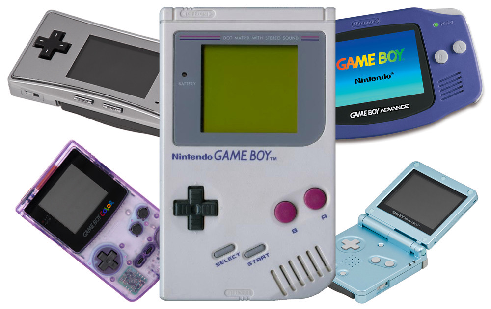
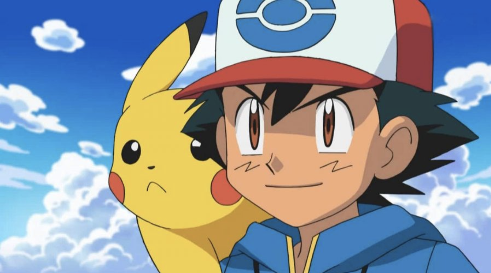
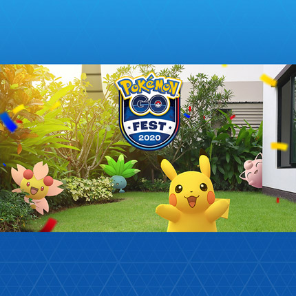
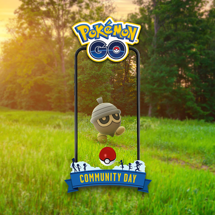

 Pokémon began as the hobby of Satoshi Tajiri, who as a child, enjoyed catching insects and tadpoles around a pond near his suburban Tokyo home. With the aid of Ken Sugimori among others, Tajiri formed Game Freak in order to give children the same thrill of imagination he enjoyed as a kid. Tajiri was also heavily influenced by a television show called Ultra Seven, wherein Ultraman would use huge monsters in capsules to help him fight evil. Therefore it was originally called Capsule Monsters, though Tajiri’s first few pitches to Nintendo failed. Later, with the help of Shigeru Miyamoto, Nintendo agreed to fund the project, though they still didn’t quite understand it, allowing the partners six years to prepare the first game. However, due to trademark issues Capsule Monsters was changed to Pocket Monsters, and Pokémon was born.
During the creation of the original game, Satoshi Tajiri went to extreme lengths to see his dream fulfilled. With the help of artist and friend Ken Sugimori and composer Junichi Masuda, Game Freak built Pokémon Red and Green, with 150 creatures for players to catch, train, trade, and battle. However, the strain nearly drove Game Freak to bankruptcy with five employees quitting due to troubling financial conditions. As a result, Tajiri worked extremely long stints of unpaid hours during the creation of the first game. After debugging was finalised and the software complete, Shigeki Morimoto programmed the ultra-rare Mew into the game, although Game Freak planned to keep the 151st Pokémon a secret.
On February 27, 1996, Pokémon Red and Green Versions were released on the original Game Boy. Upon release, the game only saw modest sales, although, after players discovered Mew, the youth magazine CoroCoro announced a “Legendary Offer” to distribute Mew to twenty lucky winners. The contest saw 78,000 entrants and demand for the game soon skyrocketed. As a result, Pokémon Blue was released with enhanced graphics and sound. The Pokémon Trading Card Game was soon developed by Media Factory in October 1996. It contained an alternate set of rules and saw massive popularity upon release. CoroCoro also held many illustration contests for the cult card game. From this point, Pokémon continued to take over Japan, achieving unprecedented cultural status.
An anime series was born with the main character and trainer named Satoshi – after Satoshi Tajiri, though this was later changed in English to Ash Ketchum – with his rival named after Shigeru Miyamoto – later Gary Oakes in the English dubbed version. A manga was also made called The Electric Tale of Pikachu which became the first-ever Japanese anime translated into English. Furthermore, the term Gotta Catch ‘Em All was coined in conjunction with the film, Mewtwo Strikes Back, which briefly held the record for highest-grossing opening for an animated film when it aired in the US in 1999. Plus, the first-ever Pokémon Centre was opened in Tokyo which focused on merchandise and all other spin-offs.
| Pokémon | # of Pokédex | Type | |
|---|---|---|---|
| 1. Charizard |

|
#006 | Fire |
| 2. Gengar |

|
#094 | Ghost & Poison |
| 3. Arcanine |

|
#059 | Fire |
| 4. Bulbasaur |

|
#001 | Grass |
| 5. Blaziken |

|
#257 | Fire & Fighting |
Pokémon Go Fest 2020 All around the World This July! |
|
|  |
Pokémon GO Fest 2020 is being fully reimagined in a virtual format that will bring the fun to Trainers around the world! This global event will take place on Saturday, July 25, and Sunday, July 26, and ticket holders will be able to participate during both days of the event. For more information, please visit here |
The Pokémon Sword and Pokémon Shield 2020 International Challenge! |
|

|
The 2020 International Challenge May has kicked off in Pokémon Sword and Pokémon Shield, and the top Masters Division players in each rating zone will qualify for the Pokémon Players Cup. Remember that unlike live competitions, there are only two divisions in this Online Competition: Juniors and Masters. Players born January 1, 2005, or later are in Juniors, while players born December 31, 2004, or earlier are in Masters. This competition uses the same rules and regulations as the current VGC format. For more information, please visit here |
Pokémon GO’s May Community Day Features Seedot |
|
|  |
The Acorn Pokémon will appear more frequently on May Community Day, and you’ll have the chance to get a Shiftry that knows Bullet Seed. For more information, please visit here |